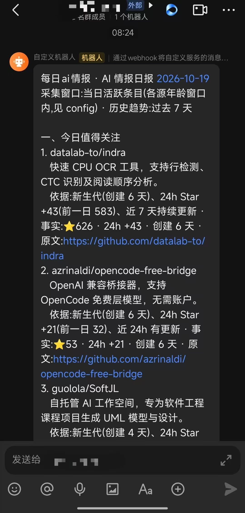
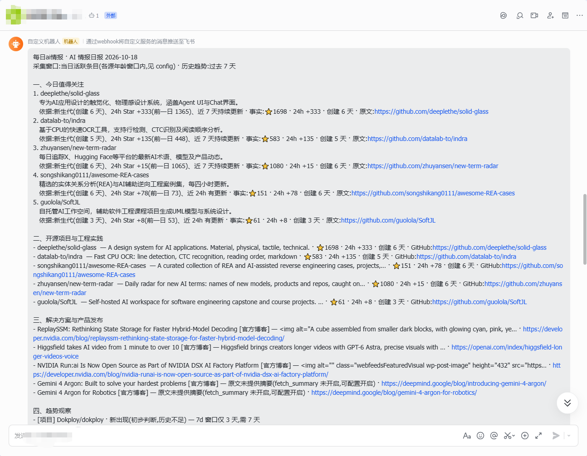

主架构图
分层 · 类 UML 方块 · 连线光点动效 · 悬停高亮
说明：实线 = 数据流/调用（光点沿实线流动表示数据在流动）；虚线 = 读取/回写/可选调用。
依赖方向从底向上：src/core（config/log/vendored 复用）作为横切基座被所有模块使用，图中未逐一画线。
采集层每源独立 try/except + 超时退避，单源失败不影响其他源；去重后全量入库，日报在消费时按热度取 top-N。
处理链路与关键设计
从采集到交付的七个环节① 采集
- 4 类来源，各源独立容错
- GitHub 3 组查询 / HN topstories / RSS×4 + HF 论文
- 超时 + 指数退避重试，403/429 不硬闯
② 规则筛选
- 字段完整（url+title）→ 时间窗口 → AI 关键词
- 仅 HN/RSS/HF 判断关键词；GitHub 由查询模板保证相关性
③ 跨源去重
- URL 归一化 → 标题 SimHash（汉明 ≤4）→ Jaccard ≥0.8
- 指纹
canonical_key供跨源归并
④ 全量入库
- 自然键
UNIQUE(platform,native_id)精确匹配 - 未命中→指纹近 7 天窗口模糊匹配→合并/插入
- 快照 + 主题日统计写回
⑤ 趋势引擎
- 纯规则五态 × 3 窗（24h/7d/30d）
- 每结论带证据（表名+数字+时间窗）
- 窗口不足明确标注；首日只建基线
⑥ 日报生成
- 当日活跃条目 → 候选排序/资格（消费时 top-N）
- 六栏目 + 长度/关键词校验
- 可选 Ollama 摘要，失败自动降级规则标签
⑦ 发送 / Agent
- 飞书幂等发送（webhook 脱敏、退避重试、uncertain 停发）
- 可选 Agent 模式：draft 占位符 → 本地 Ollama 分批渲染
横切 src/core
- config.py（yaml+env）/ log.py（按日滚动 90 天）
- vendored 复用（rss_fetcher/lsh_dedup/log_config/content_processor/config_loader）
开发流程
重点：推进方式 · 对 Multica 多 Agent 的探索推进方式（本次实践的核心）
不是「先把架构设计得很复杂再编码」，而是先打通端到端链路、再逐步增强质量；由人做方向与验收，AI 负责拆解与执行。
- PRD 先行：先与 GPT 网页端发散需求、确认技术方案 → 形成完整 PRD → 交给 Mika 分析并准备开发
- Mika 拆解为 Issue：逐阶段创建 AIQI-1~8，分配开发/采集/发送角色；人在卡点确认、任务结束审核，其余交给智能体执行
- 先闭环、后增强：先打通 采集→日报→飞书 端到端（首条真实日报当晚 20:48 送达，核心链路早验证），再补历史库、趋势、反馈修复、自动化
- 反馈打包：成员反馈一次性合并进 AIQI-7（排序/上榜理由/摘要/处理顺序/相似度去重/分段统计），避免每一条反馈都触发一次完整开发回合
- 文档即资产：README 路径相对化、配置说明清晰化，项目更易迁移，减少智能体每次启动时的无效探索
对 Multica 多 Agent 的探索（验证了什么）
- 跨设备协作：Windows（本地模型）+ Linux（生产运行）双机分工，经 Multica Cloud 中转协作
- 多角色分工：Mika 协调 / 纯开发 / 军情三处(联网搜索) / 信使(本地整理+飞书) / 本地数据分析
- 云端 + 本地混合：DeepSeek API 承担高强度开发与联网，本地 Qwen3.5:9B 承担摘要与规整，平衡质量/费用/硬件
- 定时触发：Multica Autopilot 每日调度采集/发送；Python 只跑验收过的固定命令，智能体不参与每日业务思考
- 探索结论：一套有效的个人 AI 开发工作流原型（核心开发 4.2h、次日首个自动周期）；同时暴露 上下文重读 / 任务锁竞争 / 职责重叠 / 可观测性 四个短板 → 详见「工程经验」
关键数据
| 核心开发时长 | 当晚约 4.2 小时（10-14 18:48 开工 → 22:40 完成） |
| 首个自动日报周期 | 10-15 08:53 完成 |
| 首条真实日报 | 10-14 20:48 送达飞书 |
| 单次采集耗时 | 约 68 秒（10-14 实测） |
| 发送环节耗时 | 不足 5 秒 |
| 测试规模 | 146 个 pytest |
注：各 Issue 耗时存在重叠（AIQI-3~6 创建与执行区间交叉），不应简单相加作为项目总工时。
阶段时间线（补充材料）
阶段 1 · 审计与最小可行版 23 分钟
审计已有 ai-news-brief，确认可复用模块与运行限制，而不是整体照搬。
阶段 2 · 接入情报源 57 分钟
接入 GitHub Search API / HN 官方 API / RSS / Hugging Face，建立单次运行入口 run.py。
阶段 3 · 历史库与趋势引擎 73 分钟
SQLite + FTS5 保存历史情报，项目快照与五态趋势规则，补充测试。
阶段 4 · 日报与飞书 93 分钟
日报模板 + 可选 Ollama 摘要 + 飞书幂等发送。20:48 首条真实日报送达。
阶段 5 · 定时与稳定性 171 分钟
收尾稳定性问题，接入 Multica Autopilot 定时触发机制。
阶段 6 · 反馈修复 67 分钟
一次合并处理：新生代排序、上榜理由、摘要、处理顺序、相似度去重、分段统计。
阶段 7 · 文档收尾 21 分钟
相对化路径、重构 README、补充开发统计信息。
工程经验
依据 doc/工程总结文档.md · 跨设备多智能体协作复盘多设备 · 多 Agent 运行环境
multica(Hermes)：Mika 项目组长
Ollama：qwen3.5:9B · bge-m3
multica(Hermes)：军情三处(联网采集) · 信使(规整→飞书)
multica(Pi)：纯开发(编码测试)
运行 ai-news-mvp：Python 3.14 · SQLite/FTS5
协作链路：Mika / 军情三处 / 纯开发 → DeepSeek API；信使 → LAN HTTP → Windows Ollama；纯开发 → ai-news-mvp。核心原则：代码和数据归 Linux 管，模型推理由云端或本地承担，Multica 管理任务与流程；正式代码经 Git 同步，数据库/凭证/运行状态单独定规则，不靠仓库同步。
| Linux 笔记本 | 主开发机 + 生产运行环境：正式代码 / 虚拟环境 / .env / 数据库 / 日报 / 日志，唯一权威运行环境（Ubuntu · Python 3.14 · Git · SQLite） |
| Windows 笔记本 | 开发辅助台 + 本地模型宿主：Qwen3.5:9B / bge-m3，Linux 经局域网调用以降低云端推理成本（Win10 · 32G · RTX 4060 · Ollama） |
| Multica | 任务组织与协作入口：拆 Issue、分配、定时触发、验收；它是编排层，不应该成为每天必须参与思考的「超级主程序」 |
协作架构：三层而非五个智能体自由协商
任务与编排 · Multica / Mika
Issue、任务分配、定时触发、验收与异常协调。它是协作与编排层，不是每天必须思考的「超级主程序」。
确定性业务程序 · Linux · Python · SQLite/FTS5
采集 → 规则筛选 → 去重 → 历史记录 → 趋势 → 日报 → 飞书。能用一个 Python 函数可靠完成的，就不必启动一个消耗上下文的智能体。
云端智能体 + 本地模型（按需）
云端：开发、联网搜索、复杂问题处理；本地 Qwen3.5:9B：摘要、数据规整、按需分析。模型是按需调用的能力，不应成为每个环节的必经步骤。
五个智能体角色
| Mika | Chief of Staff · 任务拆分/验收（云端） |
| 纯开发 | 编码/测试/修复（云端，主要 token 消耗者） |
| 军情三处 | 联网检索 AI 热点（云端，需约束范围与输出） |
| 信使 | 数据规整/日报/发送（本地 Qwen） |
| 本地数据分析 | 按需分析（本地，不进每日关键链路） |
判断：智能体数量 ≠ 系统能力。每个智能体应有清晰的输入、输出和权限。
做对了什么
- 先实现完整闭环，而不是先堆智能体
- 筛选/去重/统计/发送等确定性工作交给 Python，降低随机性
- 云端开发与本地执行分工，平衡质量/费用/硬件利用
- 把成员反馈一次性打包处理（AIQI-7），避免零散回合
- 把 README/文档当作工程资产，减少智能体无效探索
代价与处理方式探索
本次实践的主要效率损耗，以及可尝试的处理方式（探索方向，非最终结论）：
| 代价 | 影响 | 可能的处理方式探索 |
|---|---|---|
| 跨任务重读上下文 | 每个开发回合重新读取 Issue/文档/配置/源码/测试；复盘估计 AIQI-7 约 20–30 分钟花在重读；云端 token 损耗最大头 | 建立精简项目上下文入口（AGENTS.md / current-status.md）；固定 Issue 模板（目标 / 允许修改 / 必须读取 / 验收条件 / 交付报告）；阶段交接模板；测试分层，除非发现明确依赖否则不全仓扫描 |
| 智能体在日常任务中自由发挥 | 搜索智能体自行扩展范围、另一智能体自由组织日报 → 重复搜索/重复读取/重复写文件/token 浪费 | 日常执行固定命令 + 固定输入输出；Python 先完成确定性步骤；智能体只在数据不足、执行失败或需人工判断时介入 |
| 真实网络 / Ollama 测试混入日常 | 超时与阻塞反复拖慢测试回合，真实模型输出不稳定 | 普通测试用 mock；联网与真实模型测试单独标记（如 pytest mark），在验收或定期检查时执行 |
| 统计口径易误读 | 「发现很多、留下很少」被误读为「大部分被去重」 | 采集/筛选/去重/限量分阶段统计（项目已实现分段口径：发现→筛选→去重→入库，日报候选单独标注） |
| 调度与职责交叉 | Autopilot 触发智能体与 Python 自行发送并存 → 重复工作/双重发送/失败状态不一致 | 明确唯一每日执行入口；先确认采集与发送的依赖及失败处理；迁移 systemd timer 前先停旧 Autopilot 任务防双重调度；发送幂等 + 唯一标识，重试前查是否已发送 |
| 本地模型依赖 | 摘要依赖 Windows 宿主机与局域网可用性（睡眠/服务异常即影响） | 摘要失败自动降级规则标签（已实现）；可测 --no-summarize 纯规则链路；统一状态检查脚本，分阶段记录成败 |
成本与时间：三种耗时要分开看
- 程序执行时间：采集 68s / 发送 <5s —— 很短
- 智能体工作时间：读上下文/思考/改码/跑测试 —— 最大头
- 排队时间：同目录任务串行锁等待
token 优化重点是减少无效输入：精简上下文、合并开发回合、约束搜索、只对 Top-N 调模型、分层运行测试。原则：token 消耗由业务需要决定，不由智能体是否有空决定。
优化路线
- 阶段 A：稳定运行——唯一每日执行入口、systemd 迁移、纯程序路径、明确成功判据、限制自动重试
- 阶段 B：降本——AGENTS.md / architecture.md / decisions.md / operations.md / current-status.md + 固定 Issue 模板（目标/允许修改/必须读取/验收条件/交付报告）
- 阶段 C：更完善的多智能体协作——明确交接协议，Python 能直接做的就直接做
四道安全边界
| 文件边界 | 仅限指定工作目录，删除/覆盖需额外确认 |
| 凭证边界 | .env 不进 Git；webhook/PAT 全程脱敏不落日志 |
| 执行边界 | 定时任务只跑验收过的固定命令，不自行改配置 |
| 发送边界 | 唯一标识防重复发送；失败与生成分别记录；重试前查是否已发送 |
最终结论
多智能体架构的效率上限，不取决于智能体数量，而取决于任务边界是否清楚、上下文是否可复用、程序是否确定、失败是否可诊断。最值得投入的不是继续增加角色，而是把现有程序变成一个运行成本低、状态清楚、可以恢复、跨设备稳定工作的自动化服务。
实现效果
真实运行数据与产物（2026-10-17 实测）采集漏斗（真实口径）
成功来源 4 / 4 失败来源：无
发现 1226 → 筛选 103 → 去重 103 → 入库 103
日报候选（消费 top-N）：29 条。各阶段是不同口径：采集量大 ≠ 大部分被去重。
运行产物（data/ 目录）
ai_news_mvp.sqlite3— 全量历史库 + FTS5ai_news_mvp_run_YYYYMMDD.json— 运行统计/趋势/日报结果ai_news_mvp_candidates_*.json+draft_*.txt— Agent 模式产物content_cache.json— GitHub README 7 天缓存logs/— 按日滚动日志，保留 90 天
测试与可恢复性
- 146 个 pytest：趋势五态 / 快照幂等 / FTS5 同步 / 旧库迁移 / 跨源归并 / 主题统计 / 日报校验 / Ollama 降级 / 飞书幂等退避 / 断网单源失败 / 日志滚动 / 热度分层 / candidates-draft / agent 工具
| 断网/全源失败 | 退出 1 · runs=failed · 恢复重跑幂等 |
| 单源失败 | 其余照常 · partial · 退出 0 |
| Ollama 不可达 | 自动降级规则标签 · 不阻塞不重试 |
| 飞书不可达 | 日报已存库 · --send --date 从库重发 |
| 发送结果不确定 | 置 uncertain 停止重发，避免重复推送 |
飞书送达效果（实际运行截图）

